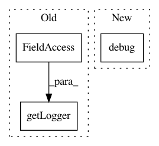

700a83deee93d13bd54849bfdac34fefda9c8f07,skll/data/writers.py,Writer,write,#Writer#,102
Before Change
format.
// Setup logger
logger = logging.getLogger(__name__)
if isinstance(self.feat_set.vectorizer, FeatureHasher):
raise ValueError("Writer cannot write sets that use"
"FeatureHasher for vectorization.")
After Change
// Otherwise write one feature file per subset
else:
for subset_name, filter_features in iteritems(self.subsets):
self.logger.debug("Subset ({}) features: {}".format(subset_name,
filter_features))
sub_path = os.path.join(self.root, "{}{}".format(subset_name,
self.ext))
self._write_subset(sub_path, set(filter_features))
In pattern: SUPERPATTERN
Frequency: 3
Non-data size: 3
Instances
Project Name: EducationalTestingService/skll
Commit Name: 700a83deee93d13bd54849bfdac34fefda9c8f07
Time: 2017-10-30
Author: nmadnani@ets.org
File Name: skll/data/writers.py
Class Name: Writer
Method Name: write
Project Name: CyberReboot/poseidon
Commit Name: e9bab683f2ace7eefb7b670898e8fa9a6cc2e6f8
Time: 2016-08-10
Author: tlanham@cs.stanford.edu
File Name: poseidon/poseidonMain/Investigator/Investigator.py
Class Name: Investigator
Method Name: process_new_machine
Project Name: pantsbuild/pants
Commit Name: 9979b78f759ef7f210f5c6319b194db121157197
Time: 2020-05-06
Author: stuhood@twitter.com
File Name: src/python/pants/init/options_initializer.py
Class Name: OptionsInitializer
Method Name: compute_pantsd_invalidation_globs